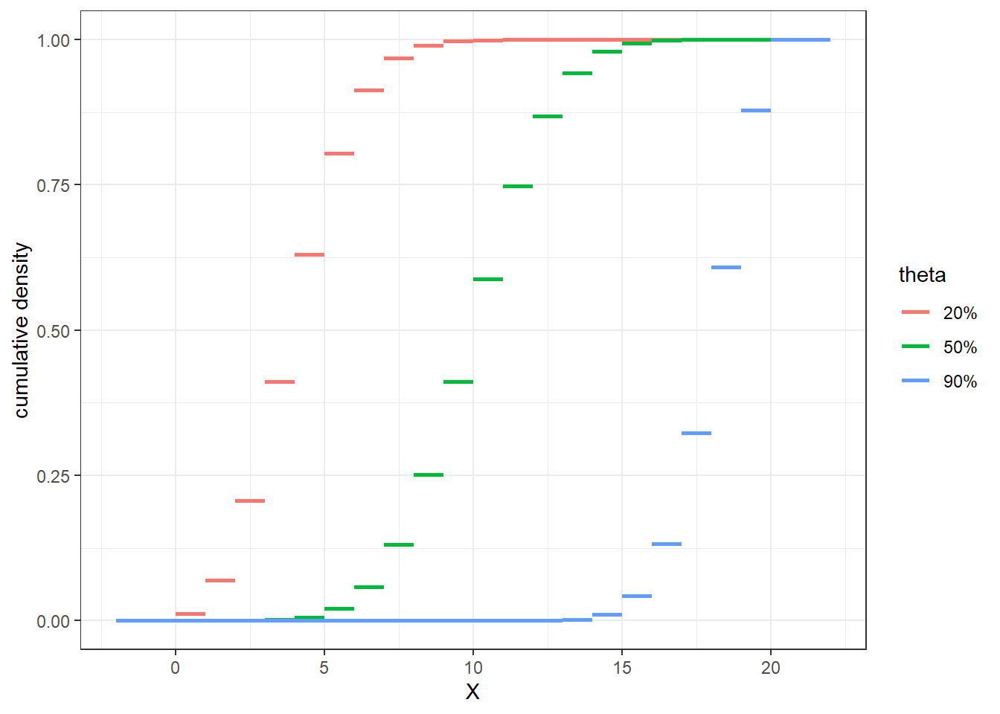
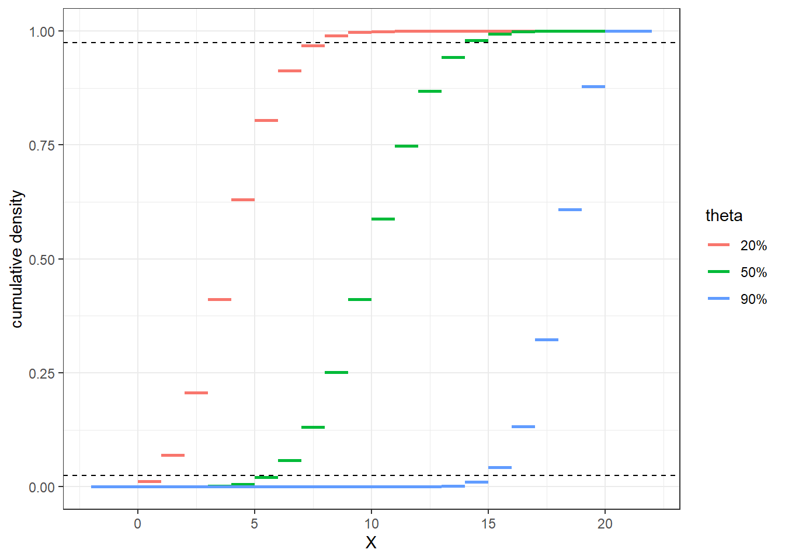
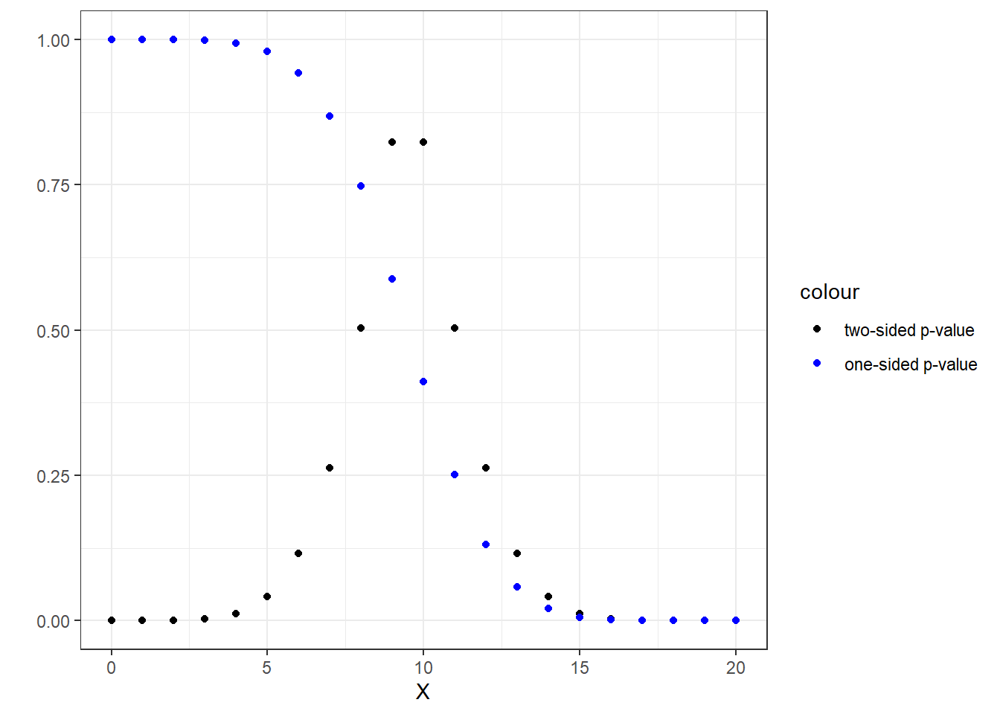
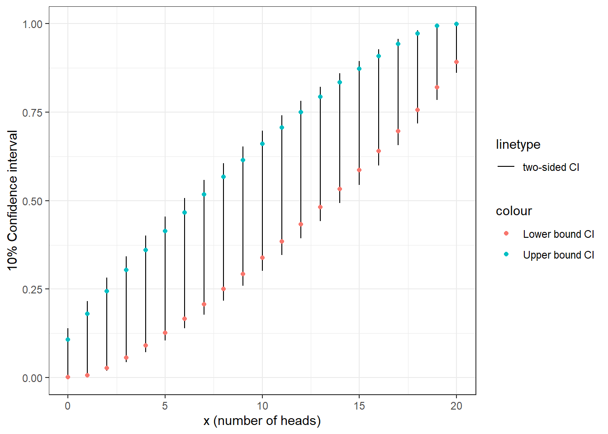
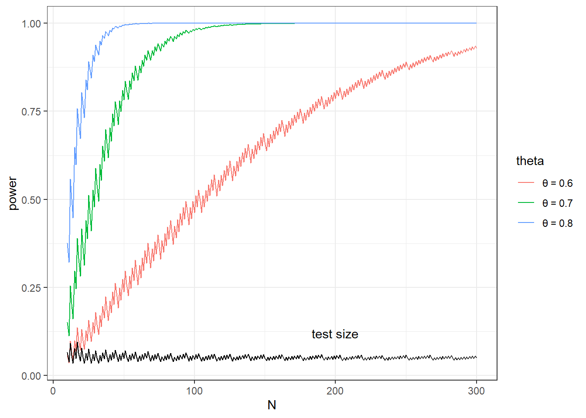
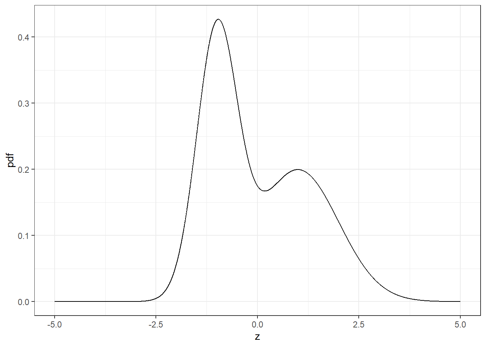
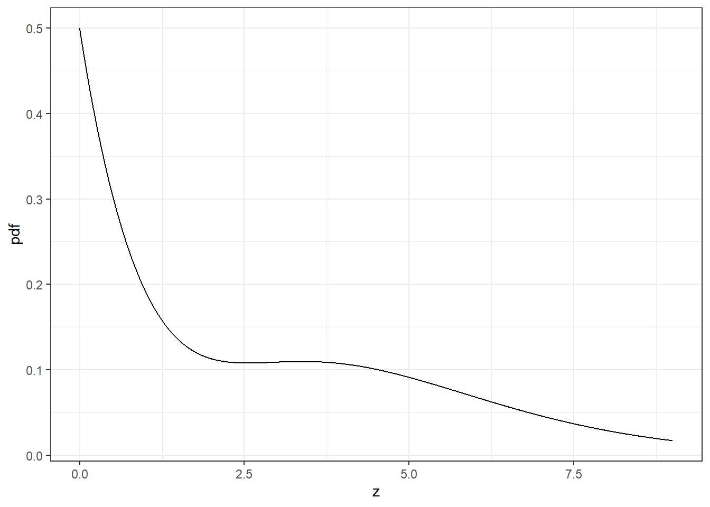
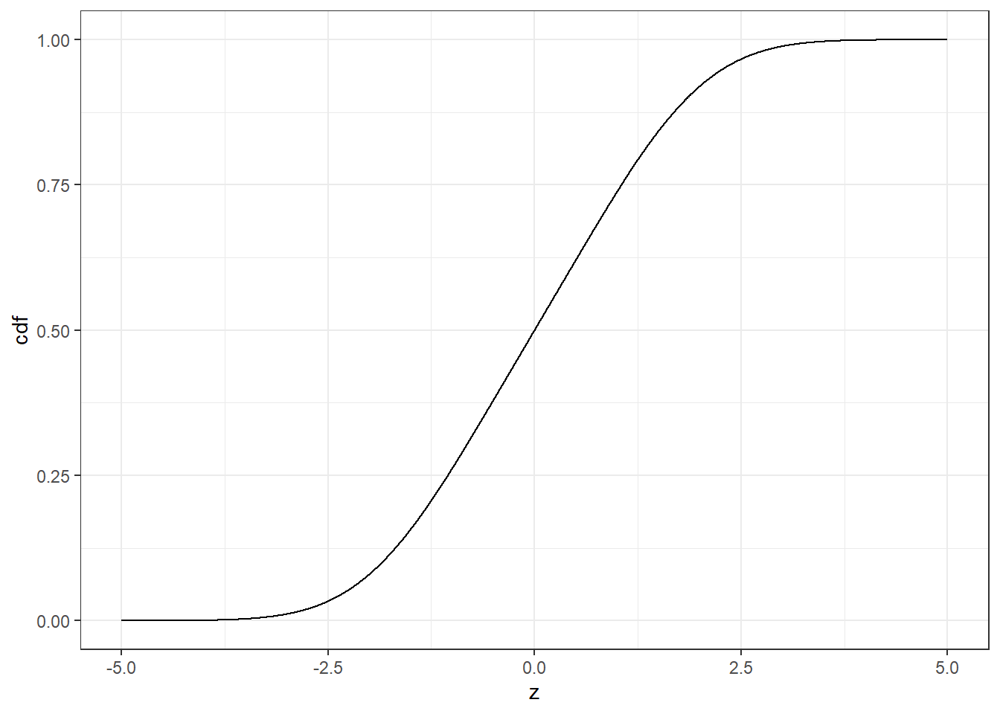
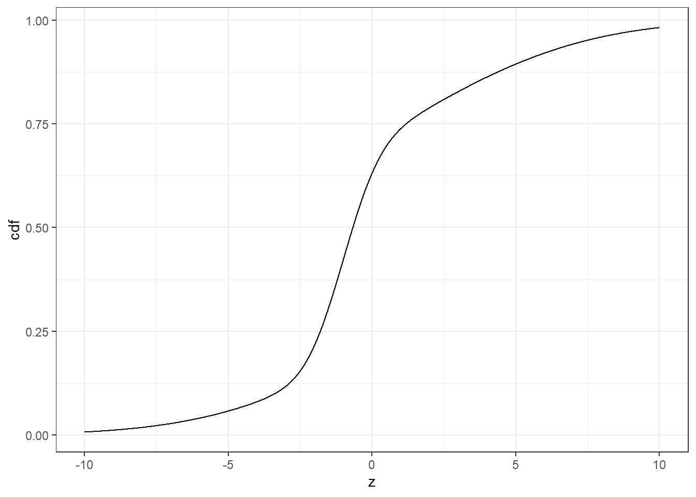
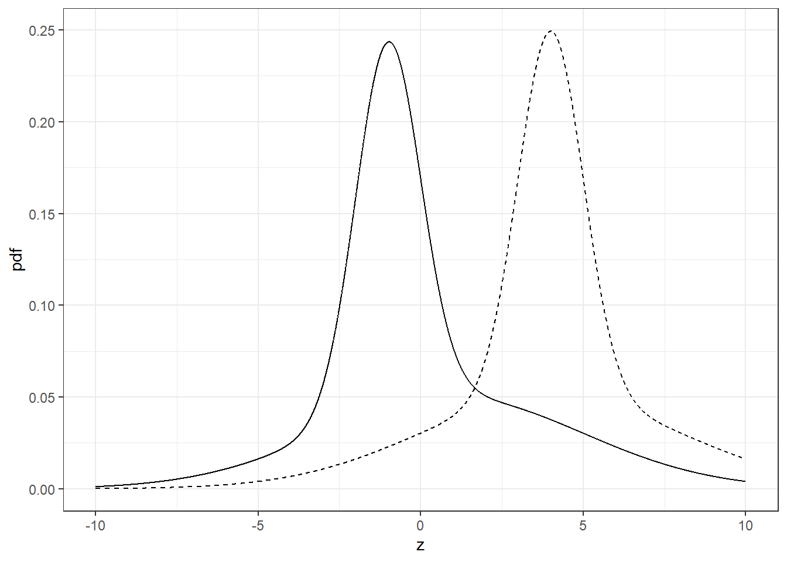

5 Inference
In Chapter the previous chapter, we introduced the concept of an estimator, and some important properties of it. In econometrics, you will be estimating stuff all the time, but equally importantly, you will be making statements about your confidence in your estimates. Formally, such a statement will take the form of a hypothesis test, a \(p\)-value, or a confidence interval.
In many textbooks, the material that follows is presented alongside asymptotic theory, which tells us how estimators behave when the sample size approaches infinity. This is where your text will have a lot of \(\xrightarrow[]{p}\), \(\xrightarrow[]{d}\), and normal, \(F\), and \(\chi^2\) distributions. These are very useful ideas, but I have found that they can be confusing when presented at the same time as the material I wish to teach you in this chapter. Therefore, what follows is a run-through of statistical inference in the absence of asymptotic theory, which we will get to in the next chapter. For the rest of this chapter, please note the absence of normal distribution tables, dividing mans by standard deviations, and the magic number 1.96.
To illustrate these concepts, let us go back to the coin-flipping example in the previous chapter. We have a data-generating process: \[\begin{align} H_i&\sim iid\mathrm{Bernoulli}(\theta)\label{eq:CH03:Bernoulli} \end{align}\] and wish to estimate \(\theta\), the probability that a coin flip will come up heads. Our research question is as follows: Is the coin a fair one? I hope that you never have to research a question as mundane as this, but once you’re done with this chapter, go and do Exercise~\(\ref{ex:CH2GaltonCoinFlip}\). Hopefully by then you can see the point of it. This research question can be formalized as \(\theta=0.5\). We collect a sample \(\{H_i\}_{i=1}^N\) of \(N\) flips of the same coin, which we assume to be independent draws from the Bernoulli distribution. We then use the sample mean \(\bar h\) as an estimator for \(\theta\): \[\begin{align} \hat\theta&=\frac1N\sum_{i=1}^NH_i \end{align}\] On its own, this gives us a point estimate of \(\theta\), which is somewhat useful, but at this point we have no idea how close our sample is to one that would come from fair coin flip. The next sections of this chapter approach the research question (is \(\theta\) equal to 0.5?) three different ways.
5.1 Hypothesis tests
Loosely, this first approach asks whether our sample looks close enough to one that would come from a coin-flipping process with \(\theta=0.5\). To do this, we need a formal definition of “looks close enough to one that would come from a coin-flipping process with \(\theta=0.5\)”. Specifically, we ask whether our estimate of \(\theta\) is close enough to the hypothesized value of \(\frac12\). Therefore we state the null hypothesis: \[\begin{align} H_0:\ \theta=0.5 \end{align}\] and an alternative hypothesis: \[\begin{align} H_A:\ \theta\neq0.5 \end{align}\] This is a two-sided alternative hypothesis, because \(H_A\) permits \(\theta\) to be either greater than or less than the value in the null. We will get to one-sided tests later.
Next we need a test statistic. This is a function of our sample, and should tell us something about \(\theta\). For the purposes of this application, we can just use our estimator for \(\theta\) itself: \(\hat\theta=\frac1N\sum_{i=1}^NH_i\). Using this, we can start to build up our definition of “looks close enough to one that would come from a coin-flipping process with \(\theta=0.5\)”. A natural measure of how close our sample is to one that would come from a \(\theta=0.5\) coin-flipping process is \(t=\hat\theta-0.5\): if \(t\) is close to zero, then this seems like good support for the coin being a fair one. On the other hand, it is unlikely that \(t\) is close to zero if the sample was generated by some other \(\theta\neq 0.5\). This is illustrated in the following Figure. If \(H_0\) is true, then our test statistic will have the distribution shown with the green lines. Notice here that there is a lot of probability for events where \(t\) is close to zero. On the other hand, if \(\theta\neq0.5\), then the distribution will look something like the red (\(\theta=0.2\)) or blue (\(\theta=0.9\)) lines. Note however, that we only get one realization of \(t\), we next need to map this in a decision rule.
N<-20
X<-seq(-2,N+2,length=(N+1)*1000)
d<-rbind(tibble(X,FX=pbinom(X,size=N,prob=0.5),theta="50%"),
tibble(X,FX=pbinom(X,size=N,prob=0.2),theta="20%"),
tibble(X,FX=pbinom(X,size=N,prob=0.9),theta="90%")
) %>% mutate(t=(X-0.5)/N)
(pltCDF<-
ggplot(d,aes(x=X,y=FX,group=paste(floor(X),theta),color=theta))
+geom_line(size=1)+theme_bw()
+xlab("X")+ylab("cumulative density")
)## Warning: Using `size` aesthetic for lines was deprecated in ggplot2 3.4.0.
## ℹ Please use `linewidth` instead.
## This warning is displayed once every 8 hours.
## Call `lifecycle::last_lifecycle_warnings()` to see where this warning was
## generated.
\(t\) tells us “how close” the sample is, but how close is close “enough” for us to conclude that \(\theta=0.5\)? To answer this, we need to make a trade-off about how often we want to be wrong, and what type of wrong that will be. Since there are two possible truths (either \(H_0\) is true or \(H_0\) is not true), and two possible decisions (either we reject \(H_0\) or do not reject \(H_0\)), then there are \(2\times 2=4\) possible outcomes of the test, half of which have us making the wrong conclusion. Table \(\ref{tab:HypTest}\) summarizes the two types of wrong that we could be: we should be worried about either failing to reject \(H_0\) when \(H_A\) is true, a type II error, or rejecting \(H_0\) when \(H_0\) is true, a type I error. Since we are basing our decisions on the test statistic, which is random, there will always be a trade-off between these two errors. For practical reasons, we focus on targeting an acceptable probability of making a type I error: incorrectly rejecting the null hypothesis. One good reason for this is that this probability is a function of the null distribution (i.e. \(\mathrm{Binomial}(N,0.5)\)). In our case, we know this exactly, and in most cases, we can approximate it if \(N\) is large enough (see the next chapter to learn about this). Compare this to evaluating the probability of a type II error: if \(H_A\) is true, then all we know is that \(\theta\neq0.5\). How do we assess the distribution of \(t\) if we don’t know the actual value of \(\theta\)? That’s a hard one, and one that we avoid entirely if we focus on targeting the probability of making a type I error.
To do this, we need to work out when we need to define a {} about rejecting \(H_0\) based on \(t\). As large \(|t|\) is evidence against \(H_0\), we will therefore use: \[\begin{align} \text{Reject } H_0 \text{ if and only if } |t|>t_c \end{align}\] where \(t_c>0\) is a critical value. Note that as \(t_c\) gets larger, the more evidence we require against \(H_0\) to reject it. When \(H_0\) is true, the probability of rejecting \(H_0\) based on this decision rule is the probability of making a type II error, and equal to: \[\begin{align} \Pr[\text{reject } H_0\mid \theta=0.5] &=\Pr[|t|\geq t_c\mid \theta=0.5]\label{eq:CH03PrReject}\\ &=\Pr\left[\left|\frac1N\sum_{i=1}^NH_i-0.5\right|>t_c\right]\\ &=\Pr\left[\left|\sum_{i=1}^NH_i-0.5N\right|>Nt_c\right]\\ &=\Pr\left[\left(\sum_{i=1}^NH_i>N(t_c+0.5)\right) \cup \left(\sum_{i=1}^NH_i<N(t_c-0.5)\right) \right]\\ &=\Pr\left(\sum_{i=1}^NH_i>N(t_c+0.5)\right) + \left(\sum_{i=1}^NH_i<N(t_c-0.5)\right) \end{align}\] where the last line follows because \(\sum_{i=1}^NH_i>N(t_c+0.5)\) and \(\sum_{i=1}^NH_i<N(t_c-0.5)\) are mutually exclusive events. But we can simplify this further, because we know that \(\sum_{i=1}^NH_i\sim\mathrm{Binomial}(0.5,N)\): we just need to add up all of the bits of its pmf that satisfy \(\sum_{i=1}^NH_i>N(t_c+0.5)\) or \(\sum_{i=1}^NH_i<N(t_c-0.5)\): \[\begin{align} \Pr[\text{reject } H_0\mid \theta=0.5] &=\sum_{k : k>N(t_c+0.5)}p(k) + \sum_{k : k<N(t_c-0.5)}p(k)\\ &=\sum_{k : k>N(t_c+0.5)}\frac{N!}{k!(N-k!)}0.5^N+\sum_{k : k<N(t_c-0.5)}\frac{N!}{k!(N-k!)}0.5^N \end{align}\] where the “\(k : k>N(t_c+0.5)\)” bit means “sum over all \(k\)s satisfying \(k>N(t_c+0.5)\)”. We are looking to set this probability equal to \(\alpha=5\%\). \(\alpha\), the probability of rejecting \(H_0\) when it is true, is referred to the test size. Actually, we can’t in general set this probability to exactly 5% for the binomial distribution, because we have no guarantee that there is a place in the pmf where we can stop adding and get 5%. Let’s pick smallest \(t_c\) such that this thing is less than 5%.
d<-(tibble(X=seq(0,N,length=N+1))
%>% mutate(t=(X/N-0.5),
pmf = dbinom(X,size=N,prob=0.5),
cdf = pbinom(X,size=N,prob=0.5)
)
)
knitr::kable(d %>% round(4))| X | t | pmf | cdf |
|---|---|---|---|
| 0 | -0.50 | 0.0000 | 0.0000 |
| 1 | -0.45 | 0.0000 | 0.0000 |
| 2 | -0.40 | 0.0002 | 0.0002 |
| 3 | -0.35 | 0.0011 | 0.0013 |
| 4 | -0.30 | 0.0046 | 0.0059 |
| 5 | -0.25 | 0.0148 | 0.0207 |
| 6 | -0.20 | 0.0370 | 0.0577 |
| 7 | -0.15 | 0.0739 | 0.1316 |
| 8 | -0.10 | 0.1201 | 0.2517 |
| 9 | -0.05 | 0.1602 | 0.4119 |
| 10 | 0.00 | 0.1762 | 0.5881 |
| 11 | 0.05 | 0.1602 | 0.7483 |
| 12 | 0.10 | 0.1201 | 0.8684 |
| 13 | 0.15 | 0.0739 | 0.9423 |
| 14 | 0.20 | 0.0370 | 0.9793 |
| 15 | 0.25 | 0.0148 | 0.9941 |
| 16 | 0.30 | 0.0046 | 0.9987 |
| 17 | 0.35 | 0.0011 | 0.9998 |
| 18 | 0.40 | 0.0002 | 1.0000 |
| 19 | 0.45 | 0.0000 | 1.0000 |
| 20 | 0.50 | 0.0000 | 1.0000 |
The obove table shows the relevant pdf and cdf. Since the \(Binomial(N,0.5)\) distribution is symmetric (i.e. \(p(X)=p(N-X)\)), we can look for one cutoff \(k_c\) at the left tail such that \(\Pr[X<k_c]\) is just less than 2.5%, and then the other cutoff will be at the corresponding point of the right tail: i.e. \(N-k_c\). Looking at the Table, we see that 2.1% of the samples will have 5 or fewer heads, and 5.8% of samples will have 6 or fewer heads. Therefore we can choose \(k_c=5\) and have a probability of rejecting \(H_0\) when \(H_0\) is true of \(2\times 2.1\%=4.2\%\), which is reasonably close to the standard number of 5%. Hence, we will reject \(H_0\) if and only if we observe a sample with 5 or fewer heads, or 16 or more heads. Note that we found these cutoffs from the Table by finding the (approximate) solutions to \(F_X(x)=0.025\) and \(F_X(x) = 0.975\). Note that graphically, this means that we are looking for points on the cdf with hight equal to 0.025 and 0.975:

We’re almost there. In fact, we could do the hypothesis test without going any further, but since we specified things in terms of our test statistic \(t\) instead of the sum of heads, for completeness we should work out \(t_c\). Graphically this is exactly the same problem as solving for the rejection rule in terms of the sum of heads. To see this, have a look at Figure \(\ref{fig:BinomialTest}\). The dashed lines have horizontal coordinates of 0.025 and 0.975. What we need to do is look at the cdf of \(t\) when \(H_0\) is true (the black line), and read off these points. These points are when \(t=-0.2\) and \(t=0.2\). So our rejection rule becomes: \[\begin{align*} \text{Reject $H_0$ if and only if: } |t|>0.2 \end{align*}\] Hence, we would reject \(H_0\) if we observed, say, 3 or 19 heads in our sample, but would not reject \(H_0\) if we observed 8 or 11 heads in our sample.
At this point it should be pretty obvious to you that you will need to compute a lot of probabilities associated with the Binomial distribution. To learn about how to do this in R, a good place to start would be by typing dbinom into the command line, then pressing F1.
5.1.1 One-sided hypothesis tests
The previous section presented a two-sided” hypothesis test: it was done under the assumption that the coin could possibly be unfair because either \(\theta\) was more or less than 0.5. Sometimes, we have reason to rule out a portion of the alternative hypothesis space, and usually this means that if \(H_0\) is not true, then we know which side of the hypothesized value (in our case 0.5) the true value of \(\theta\) is. Suppose, for example, that instead of “are we are flipping a fair coin?”, our research question was “is the coin biased towards heads?”. Formally, we could state a null and alternative as: \[\begin{align} H_0:\ \theta=0.5 ,\quad H_A:\ \theta>0.5 \end{align}\] that is, our research question motivates a (dogmatic) belief that \(\theta\) could never* be less than 0.5. The procedure for such a test is exactly the same, but we just need to think a bit more about what realizations of \(\hat\theta\) (or \(t\)) would provide us with support for \(H_A\) in favor of \(H_0\). For example, observing 2 heads, and so calculating \(\hat\theta=0.1\) and \(t=0.4\) would not be very convincing that \(\theta>0.5\), however we would have rejected \(H_0\) for the two-sided test outlined in the previous section. Hence, we need a rejection rule that only rejects \(H_0\) when we observe a sufficiently large \(\hat\theta\), or sufficiently positive \(t\). Other than that, we approach the problem in exactly the same way.
We need to choose a critical value \(t_c\) such that the rejection rule: \[\begin{align} \text{Reject } H_0 \text{ if and only if } t>t_c \end{align}\] so that the probability of this event, if \(H_0\) was true, is equal to \(\alpha=0.05\), or at least close to 0.05, since \(t\) is a discrete random variable. We need to solve for: \[\begin{align} \alpha&=\Pr\left[t>t_c\right]\\ &=\Pr\left[\frac{1}{N}\sum_{i=1}^NH_i-0.5>t_c\right]\\ &=\Pr\left[\sum_{i=1}^NH_i>N(t_c+0.5)\right]\\ &=\Pr\left[\mathrm{Binomial(N,\theta)>N(t_c+0.5)}\right]\\ &=1-F_X\left(N(t_c+0.5)\right) \end{align}\] where \(F_X(\cdot)\) is the binomial cdf shown in the above Table. Therefore we are looking for a cell in the \(F_X(x)\) column of this table corresponding to (roughly) \(F_X(x)=1-\alpha=0.95\). The probability of drawing 13 or fewer heads is 0.942, and the probability of drawing 14 or fewer heads is 0.979, so we can’t get exactly \(\alpha=0.05\), but the following decision rule: \[\begin{align} \text{Reject } H_0 \text{ if and only if } t>0.15 \end{align}\] gets reasonably close: \(\alpha=1-0.9423=0.0577\).
5.2 \(p\)-values
Another popular way of reporting statistical significance is with a \(p\)-value. The \(p\)-value associated with a hypothesis test is defined as the probability of observing a test statistic at least as extreme as the one we actually observed, assuming that \(H_0\) is true. If this almost seems like \(\alpha\), the test size, then you have made an important connection! \(p\) is equal to the test size \(\alpha\) that would put you on the margin between rejecting and not rejecting \(H_0\) for your observed sample.
The benefit of reporting a \(p\)-value is that it allows your reader to test your hypothesis at their choice of \(\alpha\), rather than the one that you selected. For example, if you calculated \(p=0.03\), then you would reject \(H_0\) if you wanted to do an \(\alpha=0.05\) test, but fail to reject \(H_0\) for an \(\alpha=0.01\) test. A smaller \(p\)-value means that the data would pass a more stringent hypothesis test.
For example, suppose that you observed 3 heads in your sample. Since we’ve learned about how to do hypothesis tests with coin flips, you know that you would reject the two-sided test that \(\theta=0.5\). However what if a pesky audience member at a seminar is in the mood for a more conservative test. By reporting the \(p\)-value, this may avoid an annoying question. So let’s calculate it. Since we are doing a two sided test, there are eight samples that are at least as unlikely to occur when \(H_0\) is true. These the samples that include either 0, 1, 2, 3, 17, 18, 19, or 20 heads. Hence the \(p\)-value is the sum of the probabilities of these events occurring, assuming that \(H_0\) is true, i.e.~\(\theta=0.5\): \[\begin{align} p&=\sum_{k=0}^3\frac{20!}{k!(20-k)!}\frac{1}{2^{20}} + \sum_{k=17}^{20}\frac{20!}{k!(20-k)!}\frac{1}{2^{20}}\approx 0.0015 \end{align}\] so we would reject \(H_0\) at most reasonable levels of significance (including \(\alpha=0.05\)). The black circles in the following Figure show the \(p\)-values associated with the 2-sided test for all 21 possible realizations of \(\sum_iH_i\).
N<-20
d<-(tibble(X=seq(0,N,length=N+1))
%>% rowwise()
%>% mutate(cdf=pbinom(X,size=N,prob=0.5),
pval2 = 2*min(cdf,1-cdf),
pval1 = 1-cdf)
)
( pltPvals<-
ggplot()+theme_bw()
+geom_point(data=d,aes(x=X,y=pval2,color="two-sided p-value"))
+geom_point(data=d,aes(x=X,y=pval1,color="one-sided p-value"))
+scale_color_manual(breaks=c("two-sided p-value","one-sided p-value"),values=c("black","blue"))
+ylab("")
)
For the one-sided test in the previous section, note that observing 3 heads is terrible support for \(H_A\), so before we actually calculate this thing, note that it should be close to 1. We need to add up the probabilities of all the samples we could have observed, that would have supplied at least as much support for \(H_A:\ \theta>0\) as did our observed sample of 3 heads. These the samples that include either 3, 4, 5, , or 20 heads: \[\begin{align} p&=\sum_{k=3}^{20}\frac{20!}{k!(20-k)!}\frac{1}{2^{20}} \approx 0.9987 \end{align}\] The blue circles in the above Figure show the \(p\)-values associated with this 1-sided test for all 21 possible realizations of \(\sum_iH_i\).
For the other 1-sided test, with \(H_A:\ \theta<0.5\), we up all of the probabilities associated with getting at most 3 heads in our sample. In this case, observing 3 out of 20 heads is somewhat strong support for \(H_A\) in favor of \(H_0\), because we shouldn’t expect this to happen too often assuming \(H_0\) is true. In this case: \[\begin{align} p&=\sum_{k=0}^{3}\frac{20!}{k!(20-k)!}\frac{1}{2^{20}} \approx 0.0013 \end{align}\] so we would reject \(H_0\) at for any test with \(\alpha>0.0013\).
It is important to interpret \(p\)-values correctly. It is tempting to claim that \(p\) is the probability that \(H_0\) is not true. However this is false.9 Remember that we derived the \(p\)-value {} that \(H_0\) was true. Hence, you are permitted to interpret it in the following ways:
- \(p\) is the probability of calculating a test statistic at least as extreme as the one you actually calculated, assuming \(H_0\) is true.
- Assuming \(H_0\) is true (and all other distributional assumptions about the data-generating process are correct), \(p\) will be uniformly distributed (think about this when/if you learn about the method of inversion for generating random numbers).
- When \(H_0\) is true, rejecting \(H_0\) when \(p<\alpha\) implements the same decision rule as testing \(H_0\) at the \(\alpha\) level of significance.
It tells you something, just be aware of what it doesn’t tell you.
5.3 Confidence intervals
The third way we might want to report the statistical significance of our results is a {}. This reports all of the values of \(\theta_0\) for which we would fail to reject \(H_0\) in the test: \[\begin{align*} H_0:\ \theta=\theta_0,\quad H_A:\ \theta\neq\theta_0 \end{align*}\] (this also applies to one-sided hypothesis tests).
This is useful because it reports, holding \(\alpha\) constant, all of the null hypotheses that would not be rejected. The following Figure shows the confidence intervals we would assign after observing each of the 21 possible samples we could observe from flipping 20 coins. The black lines show the 2-sided confidence intervals. The red dots show the lower bound of the one-sided confidence intervals with alternative \(H_A:\ \theta<\theta_0\); the upper bound of all of these is \(\theta=0\). and the blue crosses show the upper bound of the one-sided confidence intervals with alternative \(H_A:\ \theta>\theta_0\); the lower bound of all of these is \(\theta=1\).
X<-0:20
PGRID<-seq(0.001,0.999,length=999)
CI<-matrix(-1,length(X),2)
CIoneSided<-matrix(-1,length(X),2)
a<- 0.1
notRejectRegion<-cbind(c(qbinom(a/2,N,PGRID)),qbinom(1-a/2,N,PGRID))
notRejectRegionOneSided<-cbind(c(qbinom(a,N,PGRID)),qbinom(1-a,N,PGRID))
for (xx in 1:length(X)) {
# Two-sided CIs
notReject <- (X[xx]>=notRejectRegion[,1]) & (X[xx]<=notRejectRegion[,2])
pKeep<-PGRID[notReject]
CI[xx,]<-c(min(pKeep),max(pKeep))
# One-sided
notReject <- (X[xx]>=notRejectRegionOneSided[,1]) & (X[xx]<=notRejectRegionOneSided[,2])
pKeep<-PGRID[notReject]
CIoneSided[xx,]<-c(min(pKeep),max(pKeep))
}
twoSidedCI<-tibble(x=X,lp=CI[,1],up=CI[,2])
(
ggplot()
+geom_segment(data=twoSidedCI,aes(x=x,y=lp,xend=x,yend=up,linetype="two-sided CI"))
+geom_point(data=tibble(x=X,y=CIoneSided[,1]),aes(x=x,y=y,color="Lower bound CI"))
+geom_point(data=tibble(x=X,y=CIoneSided[,2]),aes(x=x,y=y,color="Upper bound CI"))
+theme_bw()
+xlab("x (number of heads)")+ylab(paste0(a*100,"% Confidence interval"))
)
5.4 Test power
Up to this point, all of our calculations were done assuming that \(H_0\) was true (remember this, it’s important). But what about \(H_A\)? Often we will be testing something with the expectation that \(H_0\) is {} true. For example, maybe some economic theory tells us that we are not flipping a fair coin (maybe more on this later). \(\alpha\) tells us the probability that we are wrong when \(H_0\) is true, but what about being wrong when \(H_A\) is true? That is, what is the probability of a Type I error? The reason it is (relatively) easy to work out things when \(H_0\) is true is that \(H_0\) completely pins down the distribution of our test statistic. In our case in this Chapter, we know that \(\sum_iH_i\sim\mathrm{Binomial}(N,0.5)\). But for the alternative, all we know is that \(\theta\) falls in a range: the distribution of the test statistic when \(H_A\) is true is not known! That being said, we can answer a simple question: what is the probability of rejecting the null when \(\theta\) is equal to a particular value? If this seems similar to \(\alpha\), good! \(\alpha\) is the answer to this question if we plug in \(\theta\) equal to the value set in \(H_0\) (in this example, \(\theta=0.5\)). If we instead plugged in a value consistent with \(H_A\), we would be calculating the test’s power. That is, if \(H_0\) is not true, how good is our test at telling us this?
To get this, let’s go back to the rejection rule, but substitute in another value of \(\theta\), say 0.6 (i.e. the coin comes up heads with probability 60%): \[\begin{align} \Pr[\text{reject } H_0\mid \theta] &=\Pr\left(\sum_{i=1}^NH_i>N(t_c+0.5)\mid \theta\right) + \left(\sum_{i=1}^NH_i<N(t_c-0.5)\mid \theta\right) \end{align}\] So we know that \(\sum_{i}H_i\sim\mathrm{Binomial}(N,\theta)\), so this thing is equal to: \[\begin{align} \Pr[\text{reject } H_0\mid \theta]&=1-F\left(N(t_c+0.5); N,\theta\right)+F\left(N(t_c-0.5)-1; N,\theta\right) \end{align}\] where \(F(\cdot;N,\theta)\) is the cdf of the \(\mathrm{Binomial}(N,\theta)\) distribution. For our 5% test calculated earlier, we had \(t_c=0.2\), so this reduces to calculating the probability of getting 6 or fewer heads, or 16 or more heads. We have already worked out that this is equal to \(\alpha=4.2\%\) when \(H_0\) is true, but now we evaluate the same probability for a different \(\theta\). The probability of rejecting \(H_0\) when \(\theta=0.6\) is: \[\begin{align} Pr\left[\text{reject } H_0\mid \theta=0.6\right]&=\sum_{k=0}^6\frac{20!}{k!(20-k)!}0.6^k0.4^{20-k}+\sum_{k=15}^{20}\frac{20!}{k!(20-k)!}0.6^k0.4^{20-k}\\ &\approx 13\% \end{align}\]
We we want this number to be as big as possible because we want to be able to reject \(H_0\) whenever it is false. I hope 13% seems reasonably bad to you. This means that 87% of the time, we fail to reject \(H_0\). But this is what we accept when we pin down \(\alpha=0.05\). As long as we want to do a 5% test, the only variable we can play with is the sample size, \(N\). Unsurprisingly, the test power gets bigger (which is better) as \(N\) increases. The following figure shows this relationship. The black line shows the test size, which we have set to 5%. This and the other lines are jagged because the Binomial distribution is discrete: this wouldn’t happen with a continuous distribution. The colored lines show the test power for 3 different values of \(\theta\). Looking at each line individually, it is comforting that they are upward-sloping (outside of the jagged shape due to the discrete distribution). Furthermore, as \(\theta\) becomes further away from the \(H_0\) value, the power increases: it is easier to spot the difference between \(\theta=0.5\) and \(\theta=0.8\) than it is to spot the difference between \(\theta=0.5\) and \(\theta=0.6\).
NN<-10:300
THETA<-c(0.5,0.6,0.7,0.8)
POWER<-expand.grid(NN,THETA)
colnames(POWER)<-c("N","theta")
POWER<-(POWER
%>% mutate(l=qbinom(0.025,N,0.5),
r=qbinom(0.975,N,0.5),
power = pbinom(l,N,theta)+1-pbinom(r,N,theta),
theta = paste("\u03B8 =",theta)
)
)
(
ggplot()
+geom_path(data=POWER %>% filter(theta!=paste("\u03B8 =",0.5)),aes(x=N,y=power,color=theta))+theme_bw()
+geom_path(data=POWER %>% filter(theta==paste("\u03B8 =",0.5)),aes(x=N,y=power),color="black")
+geom_text(aes(x=200,y=0.12,label="test size"))
#+scale_color_manual(breaks=c(paste("\u03B8 =",0.5)),values="black")
)
5.5 The take-away
I write these notes assuming that my students have been introduced to hypothesis tests, \(p\)-values and confidence intervals at an introductory statistics/quantitative methods level. That is, you have probably seen a mechanical, plug-and-chug (“cookbook”), explanation of what to do. I intend for this to be a chapter on what you’re doing, and why you’re doing it. So what should you take away from this?
Firstly, here’s what we did:
- Stated formal null and alternative hypotheses
- Defined a test statistic
- Worked out the distribution of the test statistic assuming \(H_0\) is true
- Used this distribution to work out a decision rule
- Reported at least one of (i) the result and conclusion from a hypothesis test, (ii) reported and interpreted a \(p\)-value, and (iii) reported and interpreted a confidence interval.
- Commented on our test’s power of identifying the alternative hypothesis when it is true
But be aware that we did none of the following:
- Divide by the sample standard deviation
- Look up a normal, \(\chi^2\), Student’s \(t\), or \(F\) distribution
- 1.96
although we did look up a distribution table, but this was the Binomial distribution. Don’t worry, what you were taught in the past (probably) wasn’t wrong. Just be aware that hypothesis tests and the like can be done without assuming that anything is normally distributed. The reason that we so often do make a normal approximation is that it makes working out the distribution of the test statistic a whole lot easier, and often doesn’t change things too much.
5.6 Exercises
5.6.1 Converting a continuous variable into a coin flip
Load the Galton heights dataset. Just focus on parent height. We have a working hypothesis that within a randomly selected couple, the father is more likely to be taller than the mother.
- Formally define a population parameter that speaks to this test, and state a formal null and alternative hypothesis about this parameter that addresses the working hypothesis above.
- Define a test statistic for this hypothesis.
- What is the distribution of the test statistic when the null hypothesis is true?
- Calculate the \(p\)-value associated with your null and alternative hypotheses. State any additional assumptions you needed to make for your procedure to be valid (and don’t make any assumptions that you don’t need to). Produce a graph to illustrate what you’re doing. Hint: This is a computationally intensive exercise (for humans) that will take you too long and waste too much paper if you do it by hand.
5.6.2 The maximum of a sample
Suppose that you are interested in data drawn from a uniform distribution with unknown maximum. That is:
\[ \begin{aligned} X_i&\sim iid \mathrm{Uniform}(0,\alpha)\\ \text{pdf: }\ f(x)&=\begin{cases} 1/\alpha & \text{if } x\in(0,1)\\ 0& text{ otherwise} \end{cases}\\ \text{cdf: }\ F(x)&=\begin{cases} 0&\text{if }x\leq 0\\ \frac{x}{\alpha} &\text{if }0<x<\alpha\\ 1&\text{if } x\geq \alpha \end{cases} \end{aligned} \]
- The data in
ExUniformInference.csvare drawn from this distribution. Using the maximum of your sample as a test statistic, perform a hypothesis test at the 5% level of significance that \(\alpha = 3.2\). Your alternative hypothesis should be \(\alpha>3.2\) - What is the \(p\)-value for this hypothesis test?
- Construct a one-sided 90% confidence interval for \(\alpha\) based on the above null and alternative hypotheses.
- If the true value of \(\alpha\) is 5, what is the power of your test in part 1?
5.6.3 Assessing the performance of a “cookbook” hypothesis test
Consider the following procedure for a hypothesis test for a dataset of \(N\) iid coin flips \(\{X_i\}_{i=1}^N\): \[\begin{align*} H_0:\ \Pr[X_i=1]=0.5, \quad H_A:\Pr[X_i=1]\neq0.5\\ t = 2\sqrt N(\bar x-0.5), \quad \bar x=\frac1N\sum_{i=1}^NX_i\\ \text{Reject } H_0 \text{ if and only if } |t|>1.96 \end{align*}\] (We will understand why this might be a good approach in some circumstances in the next chapter.) Evaluate the actual size (i.e. \(\alpha\)) of this hypothesis test. How does the actual size change with sample size \(N\)?
You may want to break this problem up into answer the following steps:
- What component of \(t\) is random due to the random sampling procedure (Hint there are two possible answers: \(\bar x\) and \(N\). Work out which is correct.)
- What is the distribution of this random component when \(H_0\) is true?
- What values of \(\bar x\) mean that you would reject the null? (draw a graph)
- What is the probability that \(\bar x\) falls in to this range?
- How does this probability relate to \(\alpha\)?
5.6.4 Hypothesis tests using graphs
These questions ask you to annotate figures. If you need to find an area, shade an area (and tell me what that area is equal to), if you need to find a horizontal and/or vertical coordinate, label it (and tell me what it is equal to); and so on.
5.6.4.1 Finding a \(p\)-value
You perform the following hypothesis test: \[\begin{align*} &H_0:\ E[X]=4, \quad H_A:\ E[X]> 4\\ \text{test size} = & \alpha = 0.1 \\ \text{test statistic:}\ z &= \frac1N\sum_{i=1}^NX_i-4 \end{align*}\]The following figure shows the pdf of \(z\) when \(H_0\) is true. Annotate this figure to show how you would find the \(p\)-value for this test if your test statistic was \(z=1\):

5.6.4.2 Finding critical values
You perform the following hypothesis test: \[\begin{align*} &H_0:\ E[X]=4, \quad H_A:\ E[X]\neq 4\\ \text{test size} = & \alpha = 0.2 \\ \text{test statistic:}\ z &= \left(\frac1N\sum_{i=1}^NX_i-4\right)^2 \end{align*}\] The following figure shows the pdf of \(z\) when \(H_0\) is true. Annotate this figure to show how you would find the critical value (or values) for this test:

5.6.4.3 Finding critical values
You perform the following hypothesis test: \[\begin{align*} &H_0:\ E[X] = 0,\quad H_A:\ E[X]< 0\\ \text{test size} = & \alpha = 0.1 \\ \text{test statistic:}\ z &= \frac1N\sum_{i=1}^NX_i-0 \end{align*}\] The following figure shows the cdf of \(z\) when \(H_0\) is true. Annotate this figure to show how you would find the critical value (or values) for this test:

5.6.4.4 Finding a \(p\)-value
You perform the following test: \[\begin{align*} &H_0:\ E[X] = 1,\quad H_A:\ E[X]\neq 1\\ \text{test size} = & \alpha = 0.1 \\ \text{test statistic:}\ z &= \frac1N\sum_{i=1}^NX_i - 1 \end{align*}\] The following figure shows the cdf of \(z\) when \(H_0\) is true. The test statistic for your sample is \(z=6\). Annotate this figure to show how you would find the \(p\)-value (or values) for this test.

5.6.4.5 Power
You are testing the hypothesis: \[\begin{align*} &H_0:\ \beta_1 = 0,\quad H_A:\ \beta_1> 0\\ \text{test size} = & \alpha = 0.1 \\ \text{test statistic:}\ z &= \hat\beta_1 \end{align*}\] The dashed line shows the distribution of \(z=\hat\beta_1\) when \(H_0\) is true. The solid line shows the distribution of \(z=\hat\beta_1\) when \(\beta_1=1\) (i.e. a special case within \(H_A\)). Annotate this figure to show how you would work out the the power of this test when \(\beta_1=1\).

5.6.5 Simulation exercise
ExponentialInference.csv contains a sample of draws from the exponential distribution.
- Perform a two-sided hypothesis test at the 5% level of significance that the rate parameter \(\lambda=1\). Use the sample mean as your test statistic. Use simulation to work out the critical values for this test.
- Calculate the \(p\)-value of this test using your simulated draws.
Do Bayesian econometrics if you want to make claims like this.↩︎